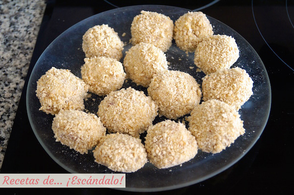
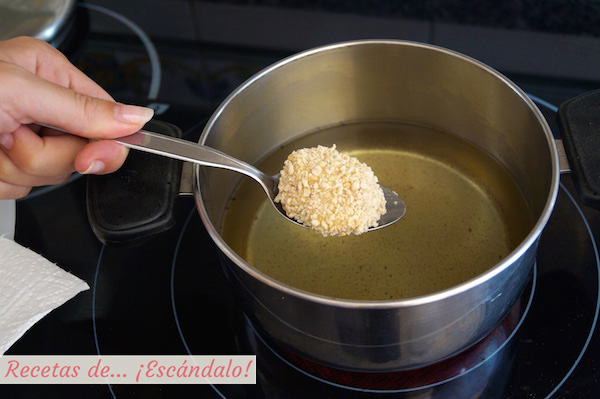

Imagen1.2
Imagen1.3

Imagen1.4

Imagen1.5
Croquetas de jamón ibérico |
|
Imagen1.1 |
|
Las croquetas de jamón que vamos hacer estan elaboradas a mano.Se trata de una receta laboriosa por la delicada bechamel que necesitan y también para formar las bolitas, pero el gustazo de llevarte una recién hecha a la boca, crujiente por fuera y súper jugosa por dentro, bien vale el esfuerzo. Hablamos de «delicada bechamel» porque te vamos a enseñar trucos para que te quede perfecta para croquetas, que sepas cuando está suficientemente densa pero que no te quede grumosa, y eso requiere que tengas que estar un rato removiéndola. Ya sabes que una vez hecha, no solo puedes añadirle jamón, sino que el pollo, el atún, las espinacas, las setas o los quesos son una opción de lo más sabrosa. |
|
|
|
|
|
 Imagen1.2 |
 Imagen1.3 |
|
Imagen1.4 |
Imagen1.5 |
|